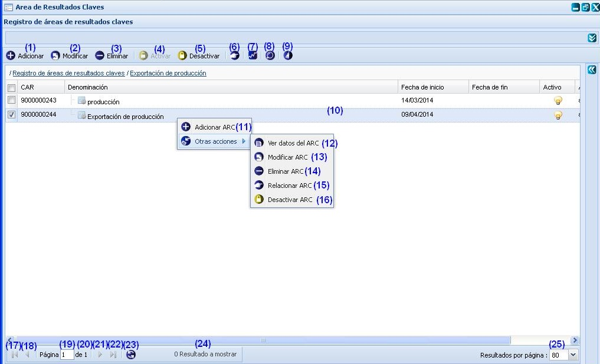
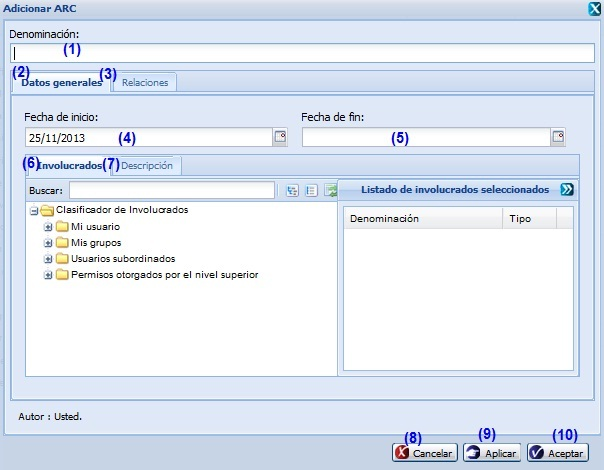
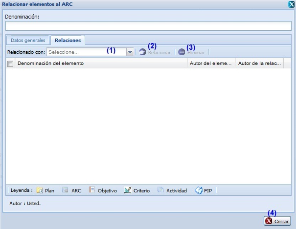
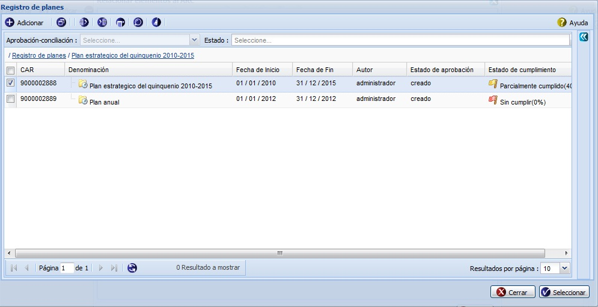
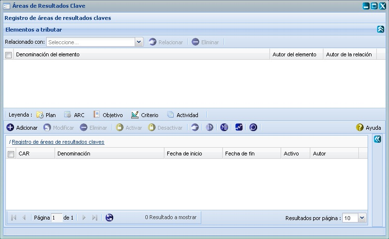
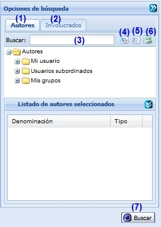

--Área de resultados claves --
Esta funcionalidad permite realizar la configuración de Áreas de Resultados Claves (ARC) necesarias para la gestión de planificación de actividades. Para acceder a estas funcionalidades el usuario debe estar autenticado y debe seleccionar la ruta: Inicio/Planificación/Planificación de actividades/Planeación/ Áreas de Resultados Claves, ver Figura 1.

Figura 1. Interfaz y acciones de la funcionalidad Áreas de Resultados Claves.
Las diferentes opciones que conforman la figura anterior permiten:
- Adicionar área de resultados claves, ver Adicionar área de resultados claves, esta acción permite adicionar una nueva área de resultados claves, cuando se presione el botón Aceptar o Aplicar de la interfaz el sistema le mostrará un mensaje de información notificando que se adicionó el área de resultados claves satisfactoriamente.
- Modificar un área de resultados claves previamente seleccionada en el listado. Para ello el sistema le mostrará la interfaz Modificar ARC con los datos cargados de la actividad seleccionada, posibilitando que se modifiquen los datos requeridos. La validación de cada uno de los campos de la interfaz será muy similar al descrito en el Adicionar ARC (Área de resultados claves). En caso de seleccionar la opción Modificar y no hacer cambios en la información referente al área de resultados claves seleccionada se debe mostrar un mensaje. Este botón estará deshabilitado hasta tanto no se haya seleccionado un área de resultados claves.
- Eliminar un área de resultados claves previamente seleccionada en el listado. Esta acción permite eliminar el(las) área(s) deseada(s), una vez seleccionada(s) la(s) misma(s) se procede a seleccionar la opción Eliminar de la interfaz, automáticamente el sistema le mostrará un mensaje de confirmación, que se puede Aceptar o Cancelar según sea el caso, de presionar la opción Aceptar el sistema le mostrará un mensaje de información sobre el éxito de la operación realizada, quedando eliminada(s) el(las) área(s) seleccionada(s), si cancela el mensaje de confirmación, el sistema permanece en la interfaz principal y no elimina el(las) área(s). Si se selecciona un área de resultados claves que está siendo usado el sistema procede a eliminar las relaciones con el área de resultados claves para luego eliminarla y se muestra un mensaje de información notificando que el área de resultados claves fue eliminada correctamente. Inicialmente la opción Eliminar de la interfaz estará deshabilitado hasta tanto no se haya seleccionado al menos un área de resultados claves.
- Activar un área de resultados claves previamente seleccionada en el listado. Para Activar un área se deben tener presente las siguientes restricciones:
- El botón Activar se habilitará después de seleccionar un área de resultados claves que se encuentre desactivada.
- Una vez que se ha tenido en cuenta la restricción mencionada anteriormente se debe seleccionar la opción Activar de la interfaz, ver opción (4) de la figura 1. Seguidamente el sistema el mostrará un mensaje de confirmación, se acepta el mensaje de confirmación y muestra un mensaje del éxito de la operación realizada. De cancelar el mensaje de confirmación el sistema permanece en la interfaz principal y no se activará el área seleccionada.
- Desactivar un área de resultados claves previamente seleccionada en el listado. Para Desactivar un área de resultados claves se debe tener presente la siguiente restricción:
- El botón Desactivar se habilitará después de seleccionar un área de resultados claves que se encuentre activada.
- Una vez que se ha tenido en cuenta la restricción mencionada anteriormente se debe seleccionar la opción Desactivar de la interfaz, ver opción (5) de la figura 1. Seguidamente el sistema le mostrará un mensaje de confirmación, se acepta el mensaje de confirmación y se muestra un mensaje sobre el éxito de la operación realizada. De cancelar el mensaje de confirmación el sistema permanece en la interfaz principal y no se desactivará el área seleccionada.
- Relacionar ARC(s), ver Relacionar ARC(s), permite establecer relaciones de la actividad con otros elementos de la planificación que se encuentren registrados en el sistema. Este botón estará deshabilitado hasta tanto no se haya seleccionado un ARC.
- Tributar ARC(s), ver Tributar ARC(s).
- Búsqueda avanzada, ver Búsqueda avanzada, esta acción permite buscar un ARC entre las áreas de resultados claves adicionadas en el sistema.
- Limpiar filtro(s). Esta acción limpiará todos los criterios de búsqueda, deshabilitando los filtros realizados.
- Se muestra el listado de áreas de resultados claves.
- Ir a la primera página, mostrando las primeras áreas de resultados claves.
- Ir a la página anterior.
- Mostrar el número de la página donde se encuentra, se puede introducir el número de la página a la que se desea ir.
- Mostrar el número máximo de páginas.
- Ir a la siguiente página.
- Ir a la última página.
- Actualizar el listado de áreas de resultados claves.
- Mostrar la cantidad de resultados encontrados.
Adicionar área de resultados claves
Se presiona el botón Adicionar de la interfaz, ver opción (1) de la Figura 1. Inmediatamente aparecerá una ventana donde se podrán especificar los datos relacionados con el área de resultados claves que se desea adicionar, ver Figura 2.

Figura 2. Adicionar área de resultados claves.
Las opciones de la figura anterior permiten:
- Introducir la denominación del área de resultados claves que desea insertar.
- Seleccionar la pestaña donde se gestionan los datos generales del área de resultados claves.
- Seleccionar la pestaña donde podrá seleccionar el plan que se apoyará en el área de resultado claves que se está adicionando. Para relacionar el área de resultados claves consulte la descripción de la funcionalidad Relacionar ARC.
- Seleccionar la fecha de inicio.
- Seleccionar la fecha de fin.
- Seleccionar la pestaña donde podrá seleccionar a las personas o usuarios que estén vinculados con el área de resultados claves. Se seleccionarán dando clic en el árbol jerárquico que se muestra.
- Seleccionar la pestaña donde se podrá ingresar la descripción detallada del área de resultados claves.
- Cancelar las acciones y salir de la interfaz sin guardar los datos.
- Guardar los datos y limpiar los campos de la interfaz, permitiendo adicionar otra área de resultados claves.
- Adicionar los del área de resultados claves al listado y cerrar la interfaz.
Validación de los campos:
- El campo Denominación es obligatorio, en caso de dejar este campo vacío y presionar los botones Aceptar o Aplicar el sistema le notificará el error, subrayando el campo en rojo y mostrando un mensaje de error, al pasar el cursor del mouse por encima del campo subrayado, y el mensaje de error: “Por favor verifique hay campo(s) vacío(s).”. Este campo acepta caracteres alfanuméricos y los caracteres especiales (“%#@!*() _;:,?-.). Al escribir otro tipo de carácter no permitido notificará subrayando el campo en rojo y mostrando el mensaje.
- El campo Fecha de inicio y Fecha de fin no son obligatorios. Debe considerar que el sistema solo permite seleccionar una fecha de inicio que sea menor o igual que la fecha de fin.
Relacionar ARC(s)
Esta funcionalidad le brindará la posibilidad de establecer relaciones de un ARC previamente seleccionado con otros elementos de la planificación que se encuentren registrados en el sistema. Para ello se debe presionar la opción (6) de la figura 1. Inmediatamente el sistema le mostrará una ventana donde se podrán establecer las relaciones., ver Figura 3.

Figura 3. Operación Definir el plan al que tributa el ARC.
Las opciones de la figura anterior permiten:
- Seleccionar de la lista desplegable del campo nombrado Relacionado con el tipo de elemento de la planificación con el que se desea relacionar el área de resultados claves a insertar. A continuación se activará el botón Relacionar. Presione dicho botón y se mostrará una interfaz con todos los elementos registrados en el sistema de acuerdo al tipo seleccionado, ver Figura 5.
- Mostrar una interfaz con todos los elementos registrados en el sistema de acuerdo al tipo seleccionado, ver Figura 5. Seleccione el elemento que desee relacionar y presione el botón Seleccionar. Seguidamente se mostrará un mensaje de información indicando que las relaciones fueron insertadas. Posteriormente se cerrará la ventana y la nueva relación se mostrará en el panel inferior de la pestaña Relaciones. Oprima el botón Cerrar si no desea efectuar más relaciones.
- Eliminar una relación establecida con anterioridad.
- Oprima el botón Cerrar si no desea efectuar relaciones o una vez establecida la relación.
La Figura 5 muestra una interfaz de ejemplo cuando se selecciona la opción Plan de la lista desplegable.

Figura 5. Interfaz Operación Relacionar con plan.
Tributar ARC(s)
Para acceder a esta funcionalidad se debe seleccionar la opción (7) de la figura 1. Inmediatamente el sistema le desglosará una ventana en la parte superior de la interfaz principal que le permitirá relacionarse al objetivo seleccionado con los diferentes elementos de la planificación que están definidos., ver Figura 6. En este caso se procede a Relacionar ARC(s), ver Relacionar ARC(s).

Figura 6. Interfaz Operación Tributar ARC(s).
Búsqueda avanzada
Para efectuar una búsqueda avanzada de un área de resultados claves en específico, debe seleccionar la opción Búsqueda avanzada de la Figura 1, luego de presionado el mismo, el sistema le mostrará la interfaz Opciones de búsqueda donde tendrá que tener en cuenta los siguientes pasos, ver Figura 7.

Figura 7. Interfaz Búsqueda avanzada.
Las diferentes opciones que conforman la figura anterior permiten:
- Seleccionar pestaña de Autores.
- Seleccionar pestaña de Involucrados.
- Introducir el criterio de búsqueda para buscar áreas de resultados claves. Esta acción permite buscar un área de resultados claves en específico a partir del criterio introducido. Luego de introducido el criterio de búsqueda se muestra el autor o involucrado que cumple con los datos especificados. En caso de que no exista un autor o involucrado que coincida con el criterio de búsqueda especificado no se obtendrá ninguna respuesta.
- Expande todos los autores.
- Colapsa todos los autores.
- Refrescar todos los autores.
- Realizar la búsqueda en el árbol de autores o involucrados en dependencia de la pestaña seleccionada.